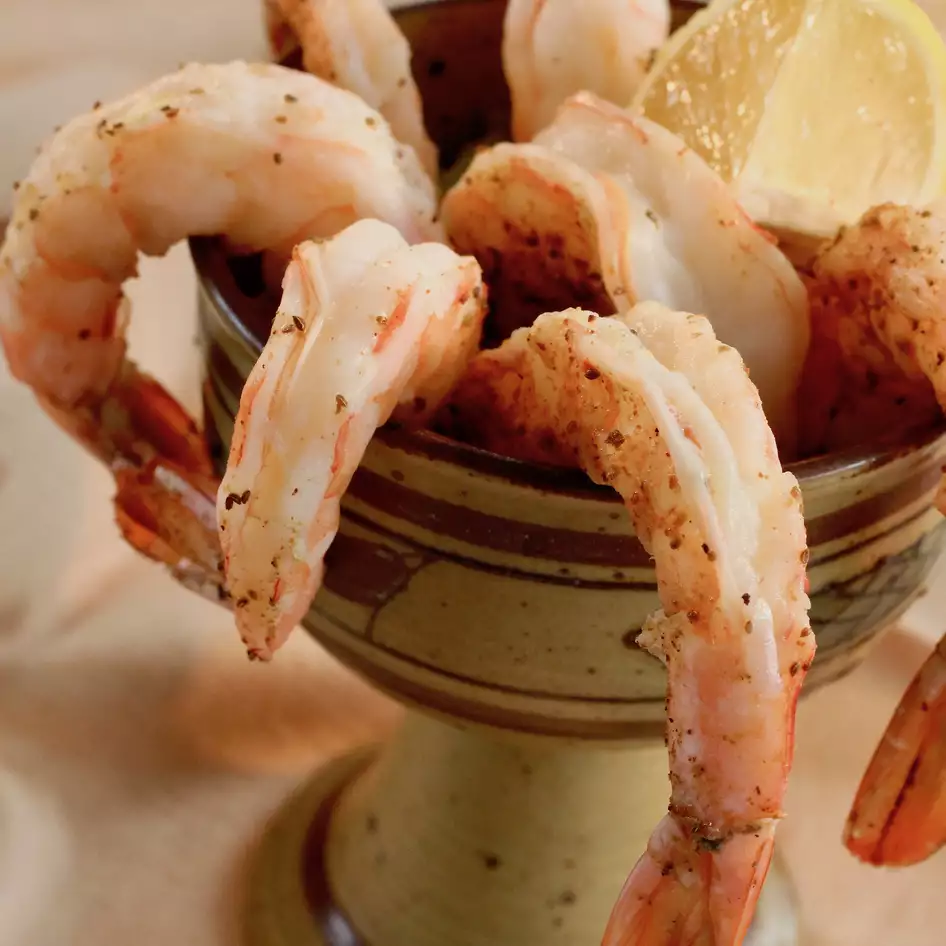

Spicy Steamed Shrimp

Description
Juicy tasty tiger prawns with amazing cocktail sauce!
Ingredients
- 1 quart water
- 1 pound tiger prawns with shell
- 3 ounces Old Bay (tm) Seasoning
- 1 (12 ounce) jar cocktail sauce
Steps
- In a large pot, bring 1 quart of water to a boil.
- Place shrimp in a steamer basket and place on top of the pot cover.
Do not submerge shrimp. Remove some water if necessary.
Season the shrimp with Old Bay seasoning.
- Steam shrimp until pink.
- Eat by removing shells as you go and dipping in cocktail sauce.
Back to top
Home